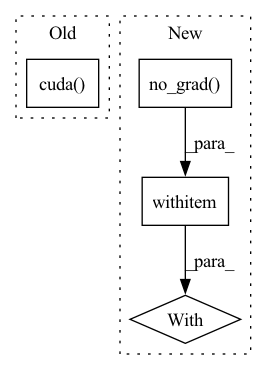

Pattern ID :12379
Before Change
output_tc = self.teacher(data)
// TODO: Find an elegant way to free the feature map and computation graph
output_tc = torch.tensor(output_tc.detach().cpu().numpy()).cuda()
output_st = self.student(data)
supervised_loss = self.criterion(output_st, target)/self.accumulation_steps
kd_loss = self.kd_criterion(output_st, output_tc)/self.accumulation_stepsAfter Change
for batch_idx, (data, target) in enumerate(self.train_data_loader):
data, target = data.to(self.device), target.to(self.device)
with torch .no_grad():
output_tc = self.teacher(data)
// TODO: Find an elegant way to free the feature map and computation graph
//output_tc = torch.tensor(output_tc.detach().cpu().numpy()).cuda()
In pattern: SUPERPATTERN
Frequency: 3
Non-data size: 4
Instances Fragment ID: 42010315
Project Name: lehduong/knowledge-distillation-by-replacing-cheap-conv
Commit Name: 7b28b7ea3d6766ff87845d80d5bdc6ef5165cf58
Time: 2020-01-22
Author: oopsxilitol@gmail.com
File Name: trainer/trainer.py
M Class Name: TrainerTeacherAssistant
N Class Name: TrainerTeacherAssistant
M Method Name: _train_epoch(2)
N Method Name: _train_epoch(2)
M Parent Class: BaseTrainer,BaseKnowledgeDistillationTrainer
N Parent Class: BaseTrainer,BaseKnowledgeDistillationTrainer
M File Name: trainer/trainer.py
N File Name: trainer/trainer.py
M Start Line: 182
M End Line: 184
N Start Line: 182
N End Line: 187
Before Change
photo = np.array(crop_img,dtype = np.float64)
// 图片预处理，归一化
photo = Variable(torch.from_numpy(np.expand_dims(np.transpose(crop_img-MEANS,(2,0,1)),0)).cuda() .type(torch.FloatTensor))
preds = self.net(photo)
top_conf = []
After Change
photo = np.array(crop_img,dtype = np.float64)
// 图片预处理，归一化
photo = Variable(torch.from_numpy(np.expand_dims(np.transpose(crop_img-MEANS,(2,0,1)),0)).type(torch.FloatTensor))
with torch .no_grad():
if self.cuda:
photo = photo.cuda()
preds = self.net(photo)
Fragment ID: 42010317
Project Name: bubbliiiing/ssd-pytorch
Commit Name: ccb1ac0bf56f9eac07d1a8536341f8b2eb8c0f66
Time: 2020-05-24
Author: 47347516+bubbliiiing@users.noreply.github.com
File Name: ssd.py
M Class Name: SSD
N Class Name: SSD
M Method Name: detect_image(2)
N Method Name: detect_image(2)
M Parent Class: object
N Parent Class: object
M File Name: ssd.py
N File Name: ssd.py
M Start Line: 82
M End Line: 83
N Start Line: 82
N End Line: 88
Before Change
queries_per_block = min(L, 1024//k)
threads = k * queries_per_block
blocks = ((L*k)//threads) + C + 1
query_map = torch.ones((N, H, blocks), dtype=torch.int32).cuda() * L
blocks_map = torch.ones((N, H, blocks), dtype=torch.int32).cuda() * -1
_, sorted_group_indices = torch.sort(groups, descending=True, dim=-1)
After Change
else:
// Allocate bookkeeping parameters to facilitate the kernel
with torch .no_grad():
Q_pb = 16
block_counts = (counts + Q_pb - 1) // Q_pb
block_counts = block_counts.int()
block_counts_cumsum = block_counts.view(-1).cumsum(-1).view(N, H, C).int() Fragment ID: 42010316
Project Name: idiap/fast-transformers
Commit Name: ac1fd6316f59b56faa3b4e9236810d4e97ed5b15
Time: 2020-11-25
Author: avyas@idiap.ch
File Name: fast_transformers/sparse_product/__init__.py
M Class Name: ClusteredSparseDotProduct
N Class Name: ClusteredSparseDotProduct
M Method Name: forward(7)
N Method Name: forward(7)
M Parent Class: torch.autograd.Function
N Parent Class: torch.autograd.Function
M File Name: fast_transformers/sparse_product/__init__.py
N File Name: fast_transformers/sparse_product/__init__.py
M Start Line: 185
M End Line: 201
N Start Line: 164
N End Line: 208